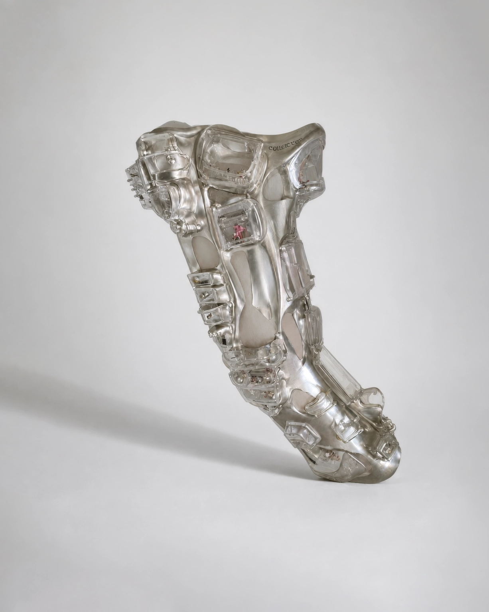

No.04 Variable Assistive Devices
Collector Sleeve, 2047
협소한 주거 환경에서 개인의 수집품과 애장품을 보관하고 감상하기 위해 개발된 신체 가변 보조 기구이다. 2040년대 서울에서는 초소형 주거에 거주한다는 사실이 개인의 경제력과 사회적 위치를 드러내는 것으로 인식되기 시작했다. 사람들은 자신의 집을 타인에게 공개하지 않았고, 전시장이나 진열장을 둘 공간 또한 사라졌다. Collector Sleeve는 이러한 환경에서 탄생한 개인용 전시 장치이다.
- 크기/무게
- W: 70, H: 43(cm) / 0.75(kg)
- 재질
- 알루미늄, 투명 아크릴, 스테인리스 스틸, 폴리카보네이트
- 사용 목적
-
협소한 주거 환경에서도 개인의 수집 취미 유지
진열장을 둘 수 없는 환경에서 신체를 전시 공간으로 활용 - 유도 자세
-
척추를 C자 형태로 굴곡
무릎을 몸 가까이 당김
고개를 아래쪽 또는 안쪽 스크린 방향으로 숙임
양팔을 몸 가까이에 유지
시야를 포드 내부로 제한 - 추정 환경
- 초소형 원룸 및 마이크로 하우징
- 추정 사용
- 슬리브 내부의 모듈에는 반복적으로 물건을 탈착한 흔적이 남아 있으며, 투명 커버에는 손가락이 자주 닿은 미세한 스크래치가 확인된다. 이를 통해 사용자는 귀가 후 슬리브를 펼쳐 수집품을 감상하거나 교체하는 행위를 일상적으로 반복했던 것으로 추정된다. 장치의 외부는 평범한 의복처럼 제작되어 외부에서는 내부 구조를 확인할 수 없으며, 전시는 오직 집 안에서만 이루어졌던 것으로 보인다.
* 이미지에 마우스를 올려보세요.